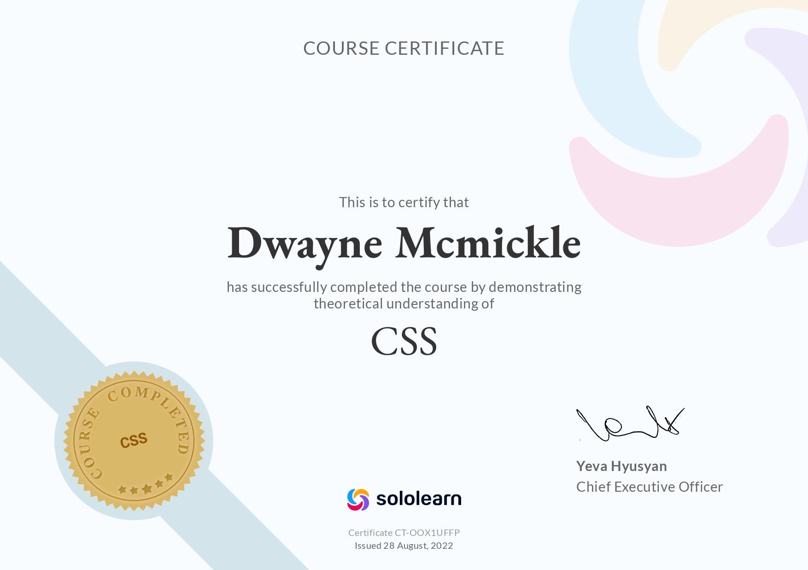

My Objective Is to work a job that is stable and at the same time challenging. A job where hard work is recognized over time. A job where I learn new skills while also developing my current skills. I have always been a good team player and a bit of a perfectionist. I am Very Reliable And can't wait to find a team that could use my help.
>
Software Experience
I do not have any on job experience with coding. I Do know HTML,CSS, And learning all I can With Javascript.I designed this resume myself, All with HTML And CSS. I know I have a mind for this I just need a team that needs me, because thats when I work the best. Besides youtube courses and an a few online courses I am self taught.
Programming Language
Time Spent
Certificiates
Javascript
1 Year
1
CSS
1 Year
1
HTML
2 Years
1

Assistant Manager/ Manager Experience
Imagine Farms, 03/04/2021 - 12/06/2022, $39,500 A Year, Lead Seeder
Manager Duties
Seed And Germinate everything That We Sell
Check PH balance of plants
Finding new restaurants/Sotres to buy our greens
Talk to investors about the business model
Research and experiment with new plants
Learning hydroponics
Reference
Camila (Head Manager) 305-910-1824
Why Did I leave?
Even though I loved working in agriculture im ready to switch career paths into something in software development. I realised after about a year of working at this farm the bosses of the company stopped giving me new things to do and learn. I felt like I was getting paid to do a job that is only valuable in a very small niche. And funny enough the bosses wanted to upgrade the system which is all just coding. So I learned coding while they hired somebody to code the system for them. They only saw me as the seed manager not someone who knew about software development. They didnt give me a chance to prove myself after six months of asking so I left.
The Sylvester, 10/22/2019 - 01/19/2021, $15 A Hour, Assistant Chef/ Bar Prepper
Assistant Manager Duties
Prepare The bartender stations
Prepare and run the kitchen (Alone Sometimes)
Clean bar after close
Ordering Inventory For bar And Kitchen
Reference
Ronny (Bar Manager) 786-973-7227
Why Did I Leave?
Working At A bar Was Amazing. The problem came with Covid. After shutting down for a few months the bar reopened with some new managers. Who were ok but worked me almost 7 days a week for months and did not give me a raise or anything. The final straw was when the Manager thought I lied about seeing a rat. I left a couple weeks after that because I felt like I was being seen as a problem even though they were the ones who did not hire somebody who wouldn't quit.
The Cheese Course, 11/12/2016-9/6/2018, $11 A Hour, Lead Cook
Lead Cook Duties
Prep/make food
keep inventory/order food
Clean Kitchen
Deliver Food
Study Cheese And Wine Pairings
Why Did I Leave?
I had to leave do to the restaurants closing. The boss took a risk to relocate the restaurant in south beach which did not work.Welp at least I get to say I worked on south beach. Seriously though I might have kept working there. Looking back I was defenitly underpaid, but the leadership skills I learned is priceless. This was also my first real job so I did not know you had to ask for a raise.
Education
I went to community college from 2016-2019. I studied theater and had moments i'll never forget in life. Not only was I learning to be an actor I was learning how to bond with others. Trust me when I tell you you don't really know somebody untill you have to do a scene together. Acting brought out a side of me that I did not know I had. I got to headline a couple of theater plays at my college and travel to south carolina for a contest. Besides acting my other courses were basically highschool level if you ask me. I did not complete my degrre. After I took all the theater Courses I started working more full time.
That newspapper article Image (Im wearing The black Shirt). Was defenitly something I was going to put in my resume. You can also click the image to go back to the top!